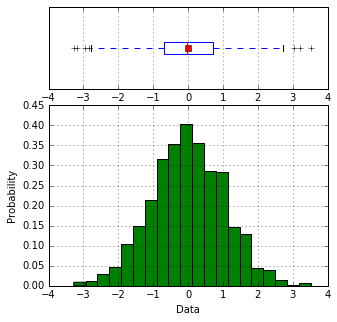

What is sci_analysis?¶
sci_analysis is a python package for quickly performing statistical data analysis. It provides a graphical representation of the supplied data as well as the statistical analysis. sci_analysis is smart enough to determine the correct analysis and tests to perform based on the shape of the data you provide, as well as how the data is distributed.
Currently, sci_analysis can only be used for analyzing numeric data. Categorical data analysis is planned for a future version. The three types of analysis that can be performed are histograms of single vectors, correlation between two vectors and a comparison of means between multiple vectors.
What’s new in sci_analysis version 1.4?¶
In version 1.4, sci_analysis was re-written to be more pythonic and to support python 3. A ton of new graphing options have been added histograms, scatter plots and oneway plots. Histograms can now display an accompanying cumulative distribution plot and fit lines to a specified distribution can be displayed on both the histogram and cumulative distribution plot. Scatter plots can now overlay density contour lines and display boxplot borders. Boxplots have been revamped and are now overlayed on top of a kernel density estimation, which provides a much better representation of distribution density. New tests have been added for comparing two distributions – Student’s T Test for normally distributed data, the Mann Whitney U Test for non-parametric data and the two-sample Kolmogorov-Smirnov Test for small non-parametric samples. The Kolmogorov-Smirnov Test has been added for determining goodness-of-fit to a specified distribution as well.
Getting started with sci_analysis¶
sci_analysis requires python 2.7 or 3.5.
If you use OS X or Linux, python should already be installed. You can check by opening a terminal window and typing which python on the command line. To verify what version of python you have installed, type python --version at the command line. If the version is 2.7.x or 3.5.x, where x is any number, sci_analysis should work properly.
If you are on Windows, you might need to install python. You can check to see if python is installed by clicking the Start button, typing cmd in the run text box, then type python.exe on the command line. If you receive an error message, you need to install python. The easiest way to install python is by installing Anaconda or Mini-conda from this page:
https://www.continuum.io/downloads
Alternatively, you can download the python binary from the following page, but be warned that installing the required packages can be difficult using this method:
Installing sci_analysis¶
sci_analysis can be installed with pip by typing the following:
pip install sci_analysis
On Linux, you can install pip from your OS package manager. If you have Anaconda or Mini-conda, pip should already be installed. Otherwise, you can download pip from the following page:
https://pypi.python.org/pypi/pip
sci_analysis works best in conjunction with the excellent pandas and jupyter notebook python packages. If you don’t have either of these packages installed, you can install them by typing the following:
pip install pandas
pip install jupyter
Using sci_analysis¶
From the python interpreter or in the first cell of a Jupyter notebook, type:
import sci_analysis as a
import numpy as np
Note: The package name is sci_analysis with an underscore.
This will tell python to import sci_analysis to your project as the object a.
If you are using the Jupyter notebook, you may also need to use the following code instead to enable inline plots:
%matplotlib inline
import sci_analysis as a
import numpy as np
Now, sci_analysis should be ready to use. Try the following code:
data = np.random.randn(1000)
a.analyze(data)
A histogram and box plot of the data should appear, as well as printed output similar to that below:
Statistics
----------
Count = 1000
Mean = -0.015
Std Dev = 1.043
Skewness = 0.014
Kurtosis = 0.002
Max = 3.511
75% = 0.721
50% = -0.021
25% = -0.700
Min = -3.277
IQR = 1.421
Range = 6.788
Shapiro-Wilk test for normality
-------------------------------
W value = 0.9995
p value = 0.9965
H0: Data is normally distributed
If data contains missing values or strings, they will be ignored when generating the statistics and graphing the histogram.
You should probably note that numpy was only imported for the purpose of the above example. sci_analysis uses numpy internally, so it isn’t necessary to import it unless you want to explicitly use it.
Let’s examine the analyze function in more detail. Here’s the signature for the analyze function:
def analyze(
xdata,
ydata=None,
groups=None,
name=None,
xname=None,
yname=None,
alpha=0.05,
categories='Categories'):
analyze will detect the desired type of data analysis to perform based on whether the ydata argument is supplied, and whether the xdata argument is a two-dimensional array-like object.
The xdata and ydata arguments can accept most python iterable objects, with the exception of strings. For example, xdata will accept a python list or tuple, a numpy array, or a pandas Series object. Internally, iterable objects are converted to a Vector object, which is a numpy array of type float64.
If only the xdata argument is passed and it is a one-dimensional vector, the analysis performed will be a histogram of the vector with basic statistics and Shapiro-Wilk normality test. This is useful for visualizing the distribution of the vector.
If xdata and ydata are supplied and are both one-dimensional vectors, an x, y scatter plot with line fit will be graphed and the correlation between the two vectors will be calculated. If there are non-numeric or missing values in either vector, they will be ignored. Only values that are numeric in each vector, at the same index will be included in the correlation. For example, the two following vectors will yield:
example1 = [0.2, 0.25, 0.27, "nan", 0.32, 0.38, 0.39, "nan", 0.42, 0.43, 0.47, 0.51, 0.52, 0.56, 0.6]
example2 = [0.23, 0.27, 0.29, "nan", 0.33, 0.35, 0.39, 0.42, "nan", 0.46, 0.48, 0.49, "nan", 0.5, 0.58]
a.analyze(example1, example2)
Linear Regression
-----------------
count = 11
slope = 0.8467
intercept = 0.0601
R^2 = 0.9836
std err = 0.0518
p value = 0.0000
HA: There is a significant relationship between predictor and response
Correlation
-----------
Pearson Coeff:
r = 0.9836
p = 0.0000
HA: There is a significant relationship between predictor and response
If xdata is a sequence or dictionary of vectors, summary statistics will be reported for each vector. If the concatenation of each vector is normally distributed and they all have equal variance, a one-way ANOVA is performed. If the data is not normally distributed or the vectors do not have equal variance, a non-parametric Kruskal-Wallis test will be performed instead of a one-way ANOVA.
It is important to note that the vectors should be independent from one another — that is to say, there should not be values in one vector that are derived from or some how related to a value in another vector. These dependencies can lead to weird and often unpredictable results.
For example, a proper use case would be if you had a table with measurement data for multiple groups, such as test scores per class, accidents per site or measurements per trial, where the classes, sites and trials are the groups. In this case, each group should be represented by it’s own vector, which are then all wrapped in a dictionary or sequence.
If xdata is supplied as a dictionary, the keys are the names of the groups and the values are the iterable objects that represent the vectors. Alternatively, xdata can be a python sequence of the vectors and the groups argument a list of strings of the group names. The order of the group names should match the order of the vectors passed to xdata. For example:
group_a = np.random.randn(50)
group_b = np.random.randn(25)
group_c = np.random.randn(30)
group_d = group_d = np.random.randn(40)
a.analyze({"Group A": group_a, "Group B": group_b, "Group C": group_c, "Group D": group_d})
Count Mean Std. Min Q2 Max Group
------------------------------------------------------------------------------------
50 -0.09281 0.97702 -2.06823 -0.21706 2.20736 A
25 -0.01699 0.70658 -1.81908 0.11035 1.52168 B
30 0.36266 0.97275 -1.42187 0.33914 2.77769 C
40 0.18866 0.94583 -1.50868 0.20423 2.14427 D
Bartlett Test
-------------
T value = 3.3845
p value = 0.3361
H0: Variances are equal
Oneway ANOVA
------------
f value = 1.7762
p value = 0.1545
H0: Group means are matched
In the example above, sci_analysis is telling us the four groups are normally distributed (by use of the Bartlett Test, Oneway ANOVA and the near straight line fit on the quantile plot), the groups have equal variance and the groups have matching means. The only significant difference between the four groups is the sample size we specified. Let’s try another example, but this time change the variance of group B:
group_a = np.random.normal(0, 1, 50)
group_b = np.random.normal(0, 3, 25)
group_c = np.random.normal(0.1, 1, 30)
group_d = np.random.normal(0, 1, 40)
a.analyze([group_a, group_b, group_c, group_d], groups=["A", "B", "C", "D"])
Count Mean Std. Min Q2 Max Group
------------------------------------------------------------------------------------
50 -0.19082 1.01291 -2.48687 -0.22015 2.15578 A
25 -0.03630 2.89428 -6.02110 0.07263 4.47457 B
30 -0.09452 1.14620 -2.00273 -0.14987 2.68979 C
40 -0.31092 0.86448 -2.51564 -0.13437 1.09661 D
Levene Test
-----------
W value = 22.9783
p value = 0.0000
HA: Variances are not equal
Kruskal-Wallis
--------------
H value = 0.5562
p value = 0.9064
H0: Group means are matched
In the example above, group B has a standard deviation of 2.89 compared to the other groups that are approximately 1. The quantile plot on the right also shows group B has a much steeper slope compared to the other groups, implying a larger variance.
In another example, let’s compare groups that have different distibutions and different means:
group_a = np.random.normal(0, 1, 50)
group_b = np.random.weibull(0.82, 50)
group_c = np.random.normal(2.5, 1, 30)
group_d = np.random.normal(-0.5, 1, 40)
a.analyze({"A": group_a, "B": group_b, "C": group_c, "D": group_d})
Count Mean Std. Min Q2 Max Group
------------------------------------------------------------------------------------
50 -0.07091 1.06720 -2.59419 -0.05428 2.31340 A
30 2.41758 0.86823 0.90913 2.54628 4.21419 C
50 1.26172 1.54953 0.00308 0.67848 7.18120 B
40 -0.41410 0.95377 -3.40598 -0.27992 1.64474 D
Levene Test
-----------
W value = 1.0429
p value = 0.3751
H0: Variances are equal
Kruskal-Wallis
--------------
H value = 86.0827
p value = 0.0000
HA: Group means are not matched
Note
If a dict is passed to the analyze function, the groups are reported in arbitrary order. This will be fixed in a future release.
The above example models group B as a Weibull distribution, while the other groups are normally distributed. You can see the difference in the distributions by the longer tail on the group B boxplot, and the curved shape of group B on the quantile plot. Group C has the highest mean at 2.42, which can be seen in the quantile plot and indicated by the Kruskal-Wallis test.